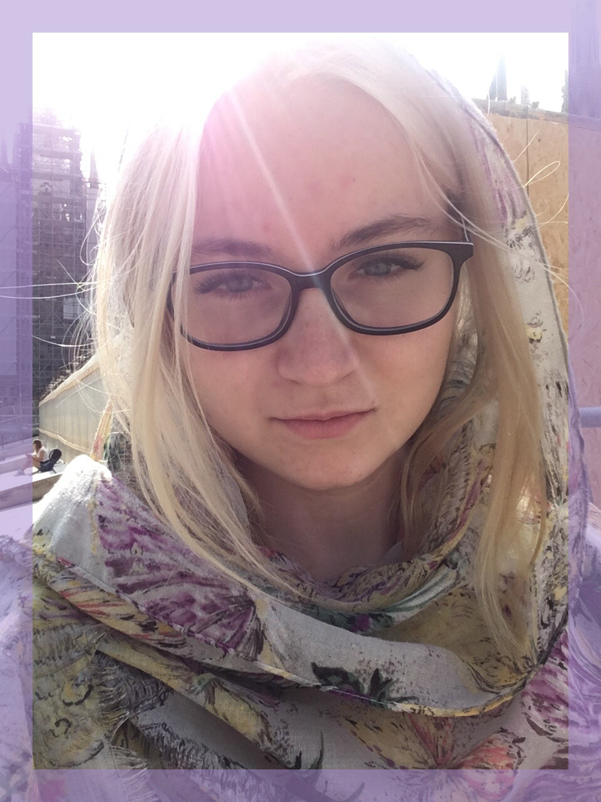

Домашнее задание №1

Научные интересы:
- Европейская культура, литература и философия ХХ века;
- История, культура, философия Франции;
- Французский и английский языки;
- История западной философии.
О себе:
Люблю путешествовать и сохранять воспоминания в виде фотографий. Мечтаю этим летом проехать по Транссибирской магистрали с остановками на несколько дней в Екатеринбурге, Новосибирске, Красноярске, Иркутске, Улан-Удэ, Хабаровске и Владивостоке.
Не считаю себя творческим человеком, предпочитаю следовать алгоритмам.
Люблю чувство уюта и тишину, не люблю жару и не люблю холод, предпочитаю межсезонье; люблю черепах, тюленей и горностаев; любимые цвета - индиго и бордовый; любимое философское направление - христианский экзистенциализм. Если бы я училась в Хогвартсе, моим факультетом был бы Слизерин.
I. Как современные технологии могут помочь филологу?
Если обратиться к определению "филологии", то можно выделить ее ключевую задачу: изучение культуры народа, выраженной в языке и литературном творчестве. Современные технологии помогают филологам уверенно ориентироваться в огромном потоке литературных артефактов в ходе поиска необходимой информации, а также оцифровывать и упорядочивать корпуса текстов. Кроме того, современные технологии предлагают совершенно новый уровень коммуникации, что упрощает ведение коллективных научных проектов и одновременно ставит новые вопросы для изучения.

II. Анализ сайтов из списка
| Сайт | Недостатки | Достоинства |
|---|
| http://www.ruscorpora.ru | Инструкция к сайту представлена в формате PDF, чтобы научиться пользоваться сайтом или найти ответ на конкретный вопрос, необходимо загружать и вчитываться в длинный файл, что занимает много времени. | На сайте собрана максимально полная информация обо всех аспектах русского языка. Красивый и простой интерфейс. |
| http://opencorpora.org | Страница выглядит как черновик. | Информация изложена кратко и ясно, все ссылки удобно (для посетителя) размещены. |
| http://tolstoy.ru/projects/tolstoy-in-one-click/ | Английская версия сайта недоступна. | Стильное и удобное оформление сайта, необходимые материалы легко находятся среди разделов. |
| http://gramota.ru | Маленький размер шрифта и подобранная цветовая гамма делают сайт зрительно неприятным. На главной странице отсутствует информативная часть, которая сообщала бы цели, для которых сайт создан. | Большой орфографический словарь с множеством примеров употребления слов, конкретных правил написания и другой полезной информацией. |
| https://rvb.ru/philologica/ | Самым ярким и привлекающим внимание объктом является реклама. Главная страница смотрится скудно. Нет удобного поиска определенной статьи по ключевым словам или как-то иначе. | Бесценный корпус статей по филологии. |
| http://www.philology.ru | Посреди главной страницы яркая реклама, сама страница оформлена минималистично, за рекламой и яркими картинками в левой части страницы теряется текст, набранный некрупным шрифтом. | Удобно оформленная библиотека с поиском по разделам филологии, а также пофамильно составленными списками авторов статей. |